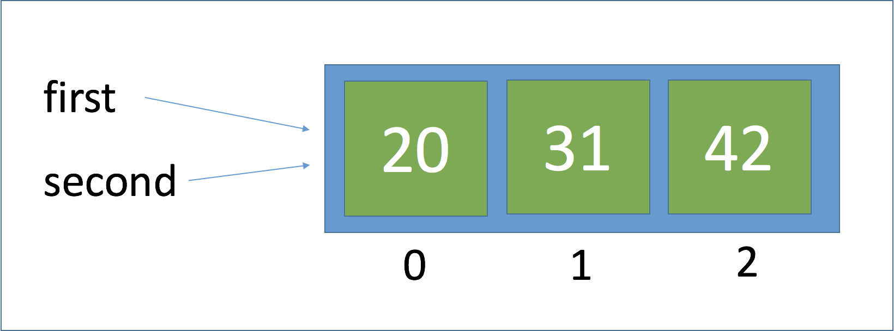
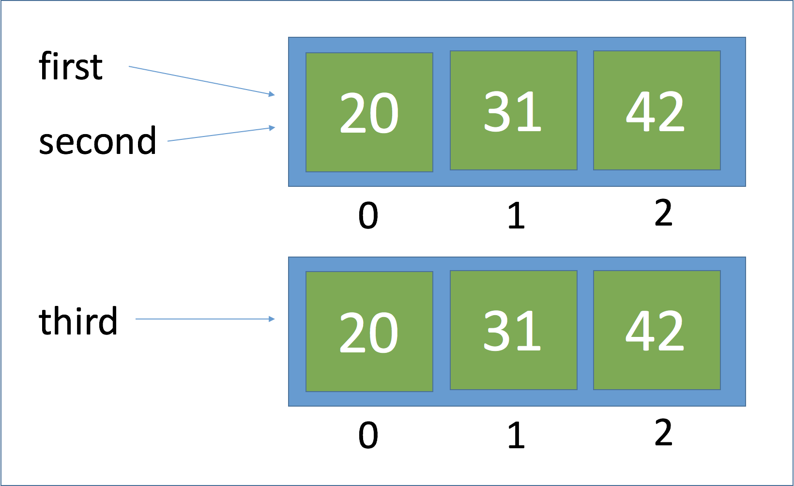

Python Lists
In Python, a list is a sequence of data values called items or elements. An item can be of any type.
A Python list is similar to a list you would make in the real-world:
- shopping list
- to-do list
- roster for a team
- guest list for a party
List structure
The logical structure of a list resembles the structure of a string. Items in a list are ordered by position. Each list item has a unique index specifying its position. Like many programming languages, Python is 0-index based, meaning list indexes start at 0, not 1. The index for a list starts with 0 and counts upward.
A list is written as a bracketed sequence of data separated by commas. Here are some examples:
[1971, 1989, 1994] # A list of integers
[‘bananas’, ‘apples’, ‘oranges’] # A list of strings
[[4, 5], [200, 343]] # A list containing two other lists
When using variables, a list is defined by either using the bracket notation [] or by casting any iterable sequence with the list() function.
Start an interactive Python session by using the python command in a terminal.
>>> a = [1, 2, 3, 4]
>>> a
[1, 2, 3, 4]
>>> type(a)
<class 'list'>
>>> b = list("Hello world!")
>>> b
['H', 'e', 'l', 'l', 'o', ' ', 'w', 'o', 'r', 'l', 'd', '!']
>>> type(b)
<class 'list'>
For convenience, we will be using the range() function to assist with list creation. The range function takes one to three arguments.
- list(range(4)) # create a list up to, but not including, the integer 4.
- list(range(2, 6)) # create a list of integers starting at 2 and going to, but not including, 6.
- list(range(3, 18, 3)) # create a list starting at 3, going to 18, and using steps of 3.
>>> r = list(range(3, 18, 3))
>>> r
[3, 6, 9, 12, 15]
>>> type(r)
<class 'list'>
>>> len(r)
5
>>> 12 in r
True
>>> 13 in r
False
Modifying lists
At any point in a list’s existence, elements can be inserted, removed, or changed. The list will maintain its identity but the contents can change.
>>> t = [34, 12, 24, 77, 234, 65]
>>> type(t)
<class 'list'>
>>> t[1]
12
>>> t[1] = 9
>>> t
[34, 9, 24, 77, 234, 65]
Note that the subscript operation t[1] refers to the element’s position and the target of the assignment.
Use the split function to extract a list of words from a sentence.
>>> s = "This is a sentence with seven words."
>>> words = s.split()
>>> words
['This', 'is', 'a', 'sentence', 'with', 'seven', 'words.']
The list object includes several methods for inserting and removing elements.
| List Method | Results |
|---|---|
| list.append(element) | Adds element to the end of the list |
| list.extend(a_list) | Adds another list to the list |
| list.insert(index, element) | Inserts element at index |
| list.pop() | Removes and returns the element at the end of the list |
| list.pop(index) | Removes and returns the element at index |
| ======= |
The append method takes the new element as an argument and adds it the the end of the list. The method insert does something similar but it takes the index and new element as arguments and adds the element to the given position by shifting the remaining elements to the right. The extend method takes another list and adds those elements to the end of the list.
>>> e = [1, 2, 3, 4, 5, 6]
>>> e.append(7)
>>> e
[1, 2, 3, 4, 5, 6, 7]
>>> e.extend([8, 9, 10])
>>> e
[1, 2, 3, 4, 5, 6, 7, 8, 9, 10]
>>> e.insert(5, 5.5)
>>> e
[1, 2, 3, 4, 5, 5.5, 6, 7, 8, 9, 10]
The pop method is used to remove an element from a list. If the index position is not specified, pop removes and returns the last element of the list. If a position is specified, pop removes the element at that location and returns it. Remaining elements would then be shifted one position to the left.
>>> e
[1, 2, 3, 4, 5, 5.5, 6, 7, 8, 9, 10]
>>> e
[1, 2, 3, 4, 5, 5.5, 6, 7, 8, 9, 10]
>>> e.pop()
10
>>> e.pop(4)
5
>>> e
[1, 2, 3, 4, 5.5, 6, 7, 8, 9]
Sorting
The list object has a sort method that will arrange its elements in numeric or alphabetical order.
>>> f = [23, 12, 500, 3.3, 42, 92, 7]
>>> f
[23, 12, 500, 3.3, 42, 92, 7]
>>> f.sort()
>>> f
[3.3, 7, 12, 23, 42, 92, 500]
Aliasing
Not all variable names refer to different variables. When two identifiers refer to the same variable (and therefore value), this is known as an alias.
>>> first = [20, 31, 42]
>>> second = first
>>> first
[20, 31, 42]
>>> second
[20, 31, 42]
>>> second.append(53)
>>> second
[20, 31, 42, 53]
>>> first
[20, 31, 42, 53]
In the example above, a single list object is created with two names, or aliases. When an element is appended to the second list, the first list changed also. This happens because the variables first and second refer to the exact same list object.

If you do not want an alias, you can pass the source list to a call of the list function.
>>> third = list(first)
>>> third
[20, 31, 42, 53]

Equality
Frequently, programmers need to check for equality between variables (are the values equal). There could also be circumstances when you need to know not only if the values are equal but do the variables refer to the same object.
The == operator returns True if two values are equal, or the lists have the same structural equivalence. The Python is operator returns True if two variables refer to the same object.
>>> first == second
True
>>> first == third
True
>>> first is second
True
>>> first is third
False